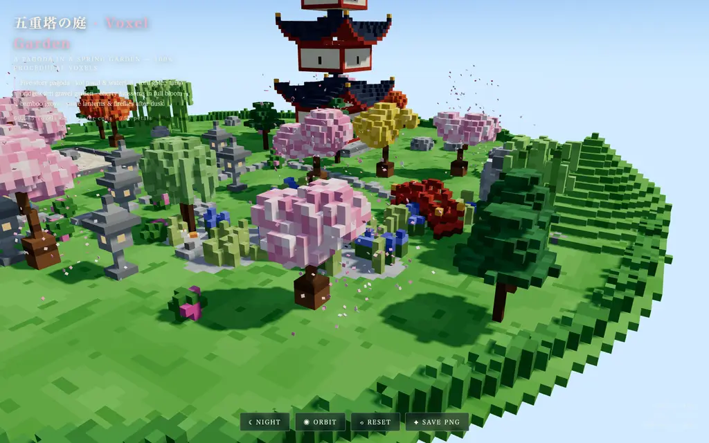

runs / 2026-10-17 / 102639-403000-baseline-7b4b8409
約40分・105回の呼び出しでボクセル庭園HTMLを納品、出力上限は分割で脱却
qwen3.8-flash-next-unsloth-ud-q4_k_xl（thinking=high）が、単一HTMLのボクセル五重塔庭園シーンを実行番号#1〜#105、合計2390秒（約40分）で制作し、exit_code 0で完走した。#3の書き出しで32,768トークンの出力上限に当たりつつも小チャンク分割で回復し、後半はスクリーンショット判定と修正を4往復して34,977バイトのindex.htmlを納品した。
成果物
work/index.html（34,977 バイト）をそのまま同梱している。重いシーンもあるため、必要なときだけ起動する。
index.html
34 KB · 起動するまで読み込まない





logs/events.jsonl の画像ブロックを内容ハッシュで重複排除して時系列に並べた、制作中の検証用スクリーンショット。最終版とは限らない。
成果物の構成
| 要素 | 内容 |
|---|---|
| 全体 | 62,412静的ボクセル＋アニメーション要素を全て手続き生成。単一HTMLでThree.jsのみCDNから読み込む |
| 五重塔 | 5層の反り屋根、金銅の相輪、石基壇、发光入口、赤提灯2対、狛犬2体 |
| 庭園と水 | 岩積み縁の不規則な鯉池、岩山からの滝（落下＋飛沫）、小川、石橋台付き赤太鼓橋 |
| 植生 | 桜7、紅葉3、銀杏2、黒松5、枝垂れ柳1、竹林38本、皐月12、菖蒲・葦の群生 |
| 石造物 | 石灯籠10（4つ実光）、明神鳥居、禅園（同心円砂紋＋岩3）、手水鉢＋竹口、飛石の参道4系統 |
| 生き物 | 鯉5匹が水面下周回、カルガモ2、猫、桜からの花びら750枚 |
| 演出 | 昼/夜切替（灯籠点灯＋ホタル110点＋月）、流れる雲8塊、自動オービット、影、ACESトーンマップ、PNG保存ボタン |
| 検証と納品 | Chromium実描画で6アングル＋夜間を反復レビュー、浮遊ボクセルはゼロ化、平均輝度168↔38、コンソールエラー0、35KBのindex.html |
モデルの最終メッセージから読み取った内容。コードの確認はしていない。
タイムライン
105 回の API 呼び出しを時間順に並べた。上段の帯の幅が各呼び出しの所要時間で、帯の間の空白がツールの実行時間。下段はその時点のコンテキスト長。細い帯は、エージェントが別に投げた補助リクエスト（画像判定など）。
最も長い 2 回の生成（#3 532 秒・#1 161 秒）で 692.7 秒、壁時計の 29.0%。出力トークンの上位 4 回（#3・#1・#6・#8）で全体の 45.0%（53,611 / 119,151）。推論以外（ツール実行など）は約 162 秒（7%）。
フェーズ別の内訳
| フェーズ | 経過 | 所要 | 全体に占める割合 | 呼び出し | 出力 tok | 何をしたか |
|---|---|---|---|---|---|---|
| 準備と計画 | 0:00–2:48 | 168 秒 | 7.0% | 2 | 8,364 | #1でbashによりワークスペースとCDN到達性を確認。#2のtodoでビルド計画を立てた。 |
| コード生成 | 2:48–20:16 | 1048 秒 | 43.9% | 10 | 62,510 | #3の大型writeが出力上限で不発（E1）となり、#4〜#7でチャンク分割して書き直し。#8〜#12で池縁の石ループ修復と残りのチャンク（配置・描画・生物・昼夜）を書いた。 |
| 結合と構文修正 | 20:16–20:42 | 25 秒 | 1.1% | 6 | 1,037 | #13の結合構文チェックで余分な括弧を検出（E2）。#14〜#17の修正と再チェックを経て#18でローカル配信した。 |
| 描画検証と判定 | 20:42–27:19 | 398 秒 | 16.6% | 33 | 15,990 | #19〜#24でブラウザ初回描画を確認（誤ったツール指定でread失敗、E4）。#25〜#41で多アングルスクショと補助バッチ判定、#42〜#51でピクセル診断により上部と池のアーティファクトを特定した。 |
| 修正と反復検証 | 27:19–38:40 | 681 秒 | 28.5% | 46 | 28,961 | 生け垣・水色・夜間輝度の修正（#55）から始まり、浮遊ボクセル除去、鳥居・提灯の固定、橋台と孤児除去を#86で適用（直前にE11〜E13のedit拒否あり）。v2〜v4判定（#57〜#93）と夜間輝度測定（#94〜#97）を往復した。 |
| 最終化と納品 | 38:40–39:50 | 69 秒 | 2.9% | 8 | 2,289 | #98〜#99で検証用デバッグフックを除去し、#100〜#101で構文・自己完結性と最終UIスモークを確認。#102〜#104でテストサーバー停止とクリーンアップ、#105で最終報告。 |
フェーズの切れ目は、ログから読み取れる作業内容の変わり目（LLM による区切り）。所要時間は、そのフェーズの最初の呼び出しの開始から次のフェーズの最初の呼び出しの開始まで。
105 回の呼び出しを表で見る
| # | 種別 | フェーズ | 開始 | 所要 秒 | prompt | うち cache | 出力 | tok/s | HTTP | ツール |
|---|---|---|---|---|---|---|---|---|---|---|
| 1 | 主ループ | 準備と計画 | 0:00 | 161.0 | 7,757 | 7,573 | 8,240 | 51.5 | 200 | bash |
| 2 | 主ループ | 準備と計画 | 2:41 | 6.7 | 16,170 | 7,752 | 124 | 50.3 | 200 | todo |
| 3 | 主ループ | コード生成 | 2:48 | 531.7 | 16,477 | 16,294 | 32,768 | 61.7 | 200 | write |
| 4 | 主ループ | コード生成 | 11:40 | 60.9 | 33,217 | 16,472 | 3,285 | 61.2 | 200 | write |
| 5 | 主ループ | コード生成 | 12:41 | 34.1 | 36,539 | 36,504 | 2,096 | 62.7 | 200 | write |
| 6 | 主ループ | コード生成 | 13:15 | 133.7 | 38,671 | 38,637 | 7,819 | 58.8 | 200 | write |
| 7 | 主ループ | コード生成 | 15:29 | 76.4 | 46,527 | 46,492 | 4,645 | 61.4 | 200 | write |
| 8 | 主ループ | コード生成 | 16:45 | 86.5 | 51,207 | 51,174 | 4,784 | 55.7 | 200 | edit |
| 9 | 主ループ | コード生成 | 18:12 | 5.1 | 56,246 | 51,202 | 120 | 51.3 | 200 | read |
| 10 | 主ループ | コード生成 | 18:17 | 9.6 | 56,781 | 56,366 | 471 | 55.7 | 200 | edit |
| 11 | 主ループ | コード生成 | 18:26 | 44.4 | 57,483 | 57,253 | 2,574 | 59.4 | 200 | write |
| 12 | 主ループ | コード生成 | 19:11 | 65.4 | 60,094 | 60,056 | 3,948 | 61.1 | 200 | write |
| 13 | 主ループ | 結合と構文修正 | 20:16 | 4.4 | 64,080 | 64,041 | 215 | 57.6 | 200 | bash |
| 14 | 主ループ | 結合と構文修正 | 20:21 | 3.7 | 64,435 | 64,295 | 151 | 51.9 | 200 | edit |
| 15 | 主ループ | 結合と構文修正 | 20:25 | 3.7 | 64,875 | 64,586 | 138 | 55.5 | 200 | grep |
| 16 | 主ループ | 結合と構文修正 | 20:28 | 5.2 | 65,474 | 65,012 | 203 | 53.5 | 200 | edit |
| 17 | 主ループ | 結合と構文修正 | 20:34 | 4.1 | 65,921 | 65,678 | 173 | 55.9 | 200 | bash |
| 18 | 主ループ | 結合と構文修正 | 20:38 | 3.4 | 66,112 | 66,094 | 157 | 54.0 | 200 | bash |
| 19 | 主ループ | 描画検証と判定 | 20:42 | 2.2 | 66,337 | 66,269 | 67 | 56.4 | 200 | read |
| 20 | 主ループ | 描画検証と判定 | 20:44 | 2.6 | 66,451 | 66,403 | 92 | 50.4 | 200 | read |
| 21 | 主ループ | 描画検証と判定 | 20:47 | 6.2 | 69,539 | 66,543 | 247 | 58.4 | 200 | eval |
| 22 | 主ループ | 描画検証と判定 | 21:15 | 16.1 | 70,051 | 69,788 | 847 | 56.4 | 200 | todo + eval |
| 23 | 主ループ | 描画検証と判定 | 21:31 | 10.0 | 71,069 | 70,898 | 524 | 57.7 | 200 | eval |
| 24 | 主ループ | 描画検証と判定 | 21:41 | 12.6 | 71,779 | 71,592 | 664 | 56.3 | 200 | eval |
| 25 | 主ループ | 描画検証と判定 | 21:54 | 10.3 | 72,578 | 72,444 | 441 | 46.4 | 200 | read |
| 26 | 主ループ | 描画検証と判定 | 22:04 | 7.7 | 73,671 | 73,019 | 302 | 47.5 | 200 | edit |
| 27 | 主ループ | 描画検証と判定 | 22:12 | 2.2 | 74,015 | 73,974 | 77 | 52.4 | 200 | read |
| 28 | 主ループ | 描画検証と判定 | 22:14 | 3.2 | 74,599 | 74,091 | 110 | 55.9 | 200 | grep |
| 29 | 主ループ | 描画検証と判定 | 22:17 | 3.5 | 74,782 | 74,709 | 145 | 52.2 | 200 | edit |
| 30 | 主ループ | 描画検証と判定 | 22:21 | 14.4 | 75,038 | 74,928 | 732 | 54.6 | 200 | eval |
| 31 | 主ループ | 描画検証と判定 | 22:53 | 4.6 | 76,342 | 75,769 | 161 | 49.9 | 200 | bash |
| 32 | 主ループ | 描画検証と判定 | 22:58 | 9.1 | 76,536 | 76,503 | 499 | 58.6 | 200 | eval |
| 33 | 主ループ | 描画検証と判定 | 23:17 | 25.5 | 77,396 | 77,035 | 1,212 | 49.7 | 200 | eval |
| 34 | 主ループ | 描画検証と判定 | 23:42 | 15.7 | 78,830 | 78,607 | 820 | 55.3 | 200 | eval |
| 35 | 主ループ | 描画検証と判定 | 23:58 | 4.9 | 79,711 | 79,652 | 198 | 52.6 | 200 | eval |
| 36 | 補助 | 描画検証と判定 | 23:58 | 13.4 | 1,127 | 0 | 357 | 52.3 | 200 | — |
| 37 | 補助 | 描画検証と判定 | 23:58 | 23.4 | 1,140 | 0 | 454 | 55.9 | 200 | — |
| 38 | 補助 | 描画検証と判定 | 23:58 | 30.5 | 1,145 | 0 | 316 | 56.9 | 200 | — |
| 39 | 補助 | 描画検証と判定 | 23:58 | 42.8 | 1,133 | 0 | 581 | 54.2 | 200 | — |
| 40 | 補助 | 描画検証と判定 | 23:58 | 50.4 | 1,127 | 0 | 339 | 57.7 | 200 | — |
| 41 | 補助 | 描画検証と判定 | 23:58 | 56.7 | 1,140 | 0 | 271 | 56.5 | 200 | — |
| 42 | 主ループ | 描画検証と判定 | 24:55 | 2.5 | 80,396 | 79,910 | 60 | 49.9 | 200 | read |
| 43 | 主ループ | 描画検証と判定 | 24:58 | 47.7 | 81,925 | 80,456 | 2,420 | 52.8 | 200 | eval |
| 44 | 主ループ | 描画検証と判定 | 25:48 | 20.2 | 84,657 | 81,920 | 894 | 49.5 | 200 | edit |
| 45 | 主ループ | 描画検証と判定 | 26:09 | 14.9 | 85,663 | 85,550 | 677 | 48.0 | 200 | eval |
| 46 | 主ループ | 描画検証と判定 | 26:24 | 10.7 | 86,395 | 86,340 | 532 | 54.6 | 200 | eval |
| 47 | 補助 | 描画検証と判定 | 26:34 | 8.0 | 1,107 | 0 | 310 | 49.7 | 200 | — |
| 48 | 補助 | 描画検証と判定 | 26:34 | 17.4 | 1,087 | 0 | 412 | 53.0 | 200 | — |
| 49 | 主ループ | 描画検証と判定 | 26:42 | 13.9 | 86,987 | 86,926 | 172 | 48.5 | 200 | eval |
| 50 | 補助 | 描画検証と判定 | 26:52 | 15.1 | 1,377 | 0 | 477 | 54.4 | 200 | — |
| 51 | 主ループ | 描画検証と判定 | 27:07 | 12.6 | 87,400 | 87,158 | 580 | 50.6 | 200 | eval |
| 52 | 主ループ | 修正と反復検証 | 27:19 | 35.3 | 88,286 | 87,982 | 1,816 | 53.0 | 200 | grep |
| 53 | 主ループ | 修正と反復検証 | 27:55 | 3.4 | 91,164 | 90,102 | 90 | 55.5 | 200 | read |
| 54 | 主ループ | 修正と反復検証 | 27:58 | 16.2 | 91,767 | 91,253 | 804 | 53.5 | 200 | grep |
| 55 | 主ループ | 修正と反復検証 | 28:14 | 14.2 | 92,815 | 92,572 | 723 | 54.6 | 200 | edit |
| 56 | 主ループ | 修正と反復検証 | 28:29 | 16.1 | 95,081 | 93,540 | 794 | 55.7 | 200 | todo + eval |
| 57 | 主ループ | 修正と反復検証 | 29:07 | 15.9 | 96,416 | 95,874 | 772 | 53.3 | 200 | eval |
| 58 | 補助 | 修正と反復検証 | 29:23 | 9.4 | 1,082 | 0 | 397 | 54.7 | 200 | — |
| 59 | 補助 | 修正と反復検証 | 29:23 | 20.2 | 1,091 | 0 | 510 | 55.3 | 200 | — |
| 60 | 補助 | 修正と反復検証 | 29:23 | 34.0 | 1,090 | 0 | 656 | 53.2 | 200 | — |
| 61 | 補助 | 修正と反復検証 | 29:23 | 45.5 | 1,082 | 0 | 528 | 54.7 | 200 | — |
| 62 | 補助 | 修正と反復検証 | 29:23 | 53.6 | 1,087 | 0 | 349 | 53.2 | 200 | — |
| 63 | 主ループ | 修正と反復検証 | 30:16 | 20.0 | 97,440 | 97,187 | 1,025 | 54.1 | 200 | eval |
| 64 | 主ループ | 修正と反復検証 | 30:37 | 15.5 | 98,818 | 98,464 | 709 | 48.8 | 200 | eval |
| 65 | 補助 | 修正と反復検証 | 30:52 | 5.9 | 996 | 0 | 228 | 52.2 | 200 | — |
| 66 | 主ループ | 修正と反復検証 | 30:58 | 30.6 | 99,742 | 99,528 | 1,464 | 49.6 | 200 | grep |
| 67 | 主ループ | 修正と反復検証 | 31:29 | 20.3 | 102,013 | 101,206 | 1,002 | 53.2 | 200 | edit |
| 68 | 主ループ | 修正と反復検証 | 31:49 | 8.2 | 103,993 | 103,016 | 374 | 56.2 | 200 | edit |
| 69 | 主ループ | 修正と反復検証 | 31:57 | 35.6 | 104,615 | 104,367 | 1,805 | 52.3 | 200 | grep |
| 70 | 主ループ | 修正と反復検証 | 32:33 | 9.9 | 106,911 | 106,420 | 447 | 51.2 | 200 | edit |
| 71 | 主ループ | 修正と反復検証 | 32:43 | 7.0 | 107,883 | 107,359 | 300 | 52.3 | 200 | bash |
| 72 | 主ループ | 修正と反復検証 | 32:50 | 11.0 | 108,201 | 108,185 | 621 | 58.2 | 200 | eval |
| 73 | 主ループ | 修正と反復検証 | 33:18 | 20.1 | 109,324 | 108,824 | 976 | 51.4 | 200 | eval |
| 74 | 補助 | 修正と反復検証 | 33:39 | 8.5 | 1,055 | 0 | 328 | 50.7 | 200 | — |
| 75 | 補助 | 修正と反復検証 | 33:39 | 18.6 | 1,072 | 0 | 483 | 56.1 | 200 | — |
| 76 | 補助 | 修正と反復検証 | 33:39 | 27.5 | 1,064 | 0 | 385 | 52.6 | 200 | — |
| 77 | 補助 | 修正と反復検証 | 33:39 | 37.0 | 1,058 | 0 | 423 | 53.9 | 200 | — |
| 78 | 主ループ | 修正と反復検証 | 34:16 | 15.9 | 110,521 | 110,299 | 725 | 50.0 | 200 | eval |
| 79 | 補助 | 修正と反復検証 | 34:32 | 8.5 | 992 | 0 | 365 | 53.6 | 200 | — |
| 80 | 補助 | 修正と反復検証 | 34:32 | 14.4 | 991 | 0 | 232 | 51.5 | 200 | — |
| 81 | 主ループ | 修正と反復検証 | 34:47 | 25.8 | 111,600 | 111,245 | 1,280 | 52.4 | 200 | grep |
| 82 | 主ループ | 修正と反復検証 | 35:12 | 2.7 | 113,240 | 112,880 | 83 | 54.0 | 200 | read |
| 83 | 主ループ | 修正と反復検証 | 35:15 | 19.5 | 113,816 | 113,325 | 967 | 53.0 | 200 | edit |
| 84 | 主ループ | 修正と反復検証 | 35:35 | 13.4 | 114,909 | 114,783 | 713 | 58.2 | 200 | edit |
| 85 | 主ループ | 修正と反復検証 | 35:48 | 16.8 | 115,797 | 115,622 | 886 | 56.4 | 200 | edit |
| 86 | 主ループ | 修正と反復検証 | 36:05 | 12.0 | 116,865 | 116,685 | 641 | 57.9 | 200 | edit |
| 87 | 主ループ | 修正と反復検証 | 36:17 | 9.9 | 118,248 | 117,508 | 432 | 50.9 | 200 | bash |
| 88 | 主ループ | 修正と反復検証 | 36:27 | 10.3 | 118,698 | 118,680 | 574 | 58.0 | 200 | eval |
| 89 | 主ループ | 修正と反復検証 | 36:55 | 12.9 | 119,638 | 119,272 | 627 | 53.2 | 200 | eval |
| 90 | 補助 | 修正と反復検証 | 37:08 | 11.5 | 1,052 | 0 | 472 | 49.9 | 200 | — |
| 91 | 補助 | 修正と反復検証 | 37:08 | 21.4 | 1,060 | 0 | 433 | 52.0 | 200 | — |
| 92 | 補助 | 修正と反復検証 | 37:08 | 29.0 | 1,057 | 0 | 331 | 54.8 | 200 | — |
| 93 | 補助 | 修正と反復検証 | 37:08 | 38.6 | 1,062 | 0 | 437 | 54.6 | 200 | — |
| 94 | 主ループ | 修正と反復検証 | 37:47 | 10.8 | 120,482 | 120,264 | 496 | 50.6 | 200 | edit |
| 95 | 主ループ | 修正と反復検証 | 37:58 | 10.2 | 121,182 | 120,977 | 509 | 55.2 | 200 | eval |
| 96 | 主ループ | 修正と反復検証 | 38:22 | 11.1 | 121,810 | 121,693 | 488 | 47.5 | 200 | eval |
| 97 | 補助 | 修正と反復検証 | 38:34 | 6.8 | 969 | 0 | 261 | 50.0 | 200 | — |
| 98 | 主ループ | 最終化と納品 | 38:40 | 5.4 | 122,482 | 122,298 | 206 | 48.1 | 200 | grep |
| 99 | 主ループ | 最終化と納品 | 38:46 | 4.5 | 122,779 | 122,688 | 191 | 50.0 | 200 | edit |
| 100 | 主ループ | 最終化と納品 | 38:51 | 4.1 | 123,054 | 122,971 | 175 | 53.3 | 200 | bash |
| 101 | 主ループ | 最終化と納品 | 38:55 | 11.3 | 123,251 | 123,228 | 621 | 56.9 | 200 | eval |
| 102 | 主ループ | 最終化と納品 | 39:25 | 6.2 | 124,052 | 123,871 | 260 | 49.3 | 200 | bash + eval |
| 103 | 主ループ | 最終化と納品 | 39:31 | 2.9 | 124,433 | 124,311 | 122 | 56.2 | 200 | bash + todo |
| 104 | 主ループ | 最終化と納品 | 39:34 | 3.7 | 124,692 | 124,557 | 148 | 50.3 | 200 | write + todo |
| 105 | 主ループ | 最終化と納品 | 39:38 | 12.0 | 124,974 | 124,841 | 566 | 50.7 | 200 |
試行錯誤
ツールがエラー（isError）を返した結果の一覧。ツールは成功したのにモデル自身が内容を壊したケースは、ここには出ない。
エラーとして記録された 13 件
| 経過 | ツール | 起きたこと | 分類 |
|---|---|---|---|
| 11:40 | write | #3のwriteは32,768トークンで上限に達し引数が途中で切れて実行されなかった。Tool call was not executed because the assistant hit its output token limit (stop_reason: length) before the arguments could complete; the recorded arguments are truncated and unsafe to run. Do NOT re | 出力上限 |
| 20:21 | bash | bashの構文チェックでrockVox呼び出しの余分な括弧がSyntaxErrorとして検出された。34381 index.html <path> ell(x,s*.55,z,s,s*.72,s,(px,py,pz,d)=>{if(d<.3&&R()<.28)return P.moss;return R()>.85?P.stoneDark:pick(P.stone,R))})} ^ SyntaxError: Unexpec | 構文エラー |
| 20:25 | edit | editのファイルタグが古い値（現行と不一致）で拒否され、再読み込みを指示された。Edit rejected for index.html: hash #A93F is not from this session. The current file hashes to #B667. Re-read the file with `read` to copy a current [path#tag] header — never invent the tag and never r | edit 拒否 |
| 20:44 | read | readで存在しないxd://browserを指定しNo such toolエラー。No such tool: xd://browser. Mounted devices: ast_edit, debug, lsp. Active top-level tools are also dispatchable via xd://<tool>. | ツール誤用 |
| 21:41 | eval | ブラウザevalスクリプトが未定義のerrsを参照してReferenceError。ReferenceError: errs is not defined at <anonymous> (browser-run-15a930417154857f.js:16:37) at async <anonymous> (browser-run-15a930417154857f.js:17:3) at async Kae (/$bunfs/root/chunks/cli-v0qw3qxx.js | 変数未定義 |
| 22:12 | edit | 全体削除指令REMに本文行を付けた誤用でeditが拒否された。line 2: `REM` deletes the whole file and takes no body rows or line ops. Issue it alone under the header. | edit 拒否 |
| 23:42 | eval | evalスクリプトが未定義のjudge_batchを参照してReferenceError。ReferenceError: judge_batch is not defined at <anonymous> (js-cell-ac5e42d9-9133-4c69-bc06-f5ccd1f96d20.js:31:25) at <anonymous> (js-cell-ac5e42d9-9133-4c69-bc06-f5ccd1f96d20.js:35:3) at eval (unknown | 変数未定義 |
| 23:58 | eval | JudgmentBatchオブジェクトに存在しないwait属性を使いAttributeError。Traceback (most recent call last): File "<cell>", line 25, in <module> AttributeError: 'JudgmentBatch' object has no attribute 'wait' Command exited with code 1 | API 誤用 |
| 26:24 | eval | アーティファクト局在化evalで未定義のwhereを使いNameError。Traceback (most recent call last): File "<cell>", line 7, in <module> NameError: name 'where' is not defined Command exited with code 1 | 変数未定義 |
| 26:34 | eval | display()に想定より多い2つの位置引数を渡してTypeError。Traceback (most recent call last): File "<cell>", line 14, in <module> TypeError: display() takes 1 positional argument but 2 were given Command exited with code 1 | API 誤用 |
| 35:35 | edit | 読み出し範囲に表示されていない479行目をanchoringしたeditが拒否された。This edit anchors to lines 479 of index.html that [index.html#2599] never displayed (it showed a partial range, a search hit, or a folded summary). Actual file content at those lines: 479:/* ========= | edit 拒否 |
| 35:48 | edit | 同様に480行目をanchoringしたeditが範囲外として拒否された。This edit anchors to lines 480 of index.html that [index.html#2599] never displayed (it showed a partial range, a search hit, or a folded summary). Actual file content at those lines: 480:const DAY={t | edit 拒否 |
| 36:05 | edit | 481行目のanchoringも拒否され、#82の全関数読み直し後に#86で適用成功した。This edit anchors to lines 481 of index.html that [index.html#2599] never displayed (it showed a partial range, a search hit, or a folded summary). Actual file content at those lines: 481:const NGT={t | edit 拒否 |
経過は、そのツールを呼んだターンの終了時刻。エラー本文は先頭 300 文字までで、パスや接続先は伏せてある。
気づいた点
計測データ（呼び出し一覧・エラー・最終メッセージ）だけから LLM が書いた読み取り。文中の数値は、上の KPI や表と照らして確認する。
巨大チャンクで出力上限
#3は32,768トークンを531.7秒かけて出力し、ちょうど上限でwrite引数が切り詰められた（E1、t=700s）。#4〜#7では1チャンク約2,100〜7,800トークンに分割して書き、同じ内容を安全に再構成した。
検証に総時間の約48%
生成作業は#18（t=1238s）まで、残る約1,150秒は4往復のスクショ判定と修正に充てられた。出力トークンも#3〜#12が約62,500で総計119,151の52%を占め、残り半数は検証・修正側で消費されている。
edit 拒否が5件
E3、E6、E11〜E13とedit拒否が5件発生し、タグ不一致・REM誤用・読み出し範囲外アンカリングが原因。#83〜#85で3連敗した後に#82の関数全体読み込みを挟み、#86で確定適用している。
補助判定の集中と長さ
26件の補助呼び出しは視覚レビュー専用で、t=1438s・1763s・2019s・2228sの4バッチに集中。最長は#41の56.7秒で、ctxは約1.1kトークンと本体履歴から独立した軽量判定だった。
ツールエラーでも完走
ツール側のエラーは13件だが、API呼び出しは全105件HTTP 200でstop理由なし、exit_code 0で終了。ピークコンテキスト124,974はウィンドウ1,048,576の約12%に収まり、打ち切り要因にはなっていない。
入力と設定
Design and create a very creative, elaborate, and detailed voxel art scene of a pagoda in a beautiful garden with trees, including some cherry blossoms. Make the scene impressive and varied and use colorful voxels. Add as many details as possible to showcase your attention to them. Use whatever libraries to get this done but make sure I can paste it all into a single HTML file.
input/prompt.md の全文。SHA-256 は ceece4685b37…。
| omp の起動オプション | --print --mode json --thinking high --no-extensions --no-skills --no-rules --no-title --approval-mode yolo |
| upstream | （接続先は伏せている） |
| タイムアウト | 10,800 秒 |
config/00-omp.yml
setupVersion: 2 autolearn: enabled: false autoContinue: false skills: enabled: false